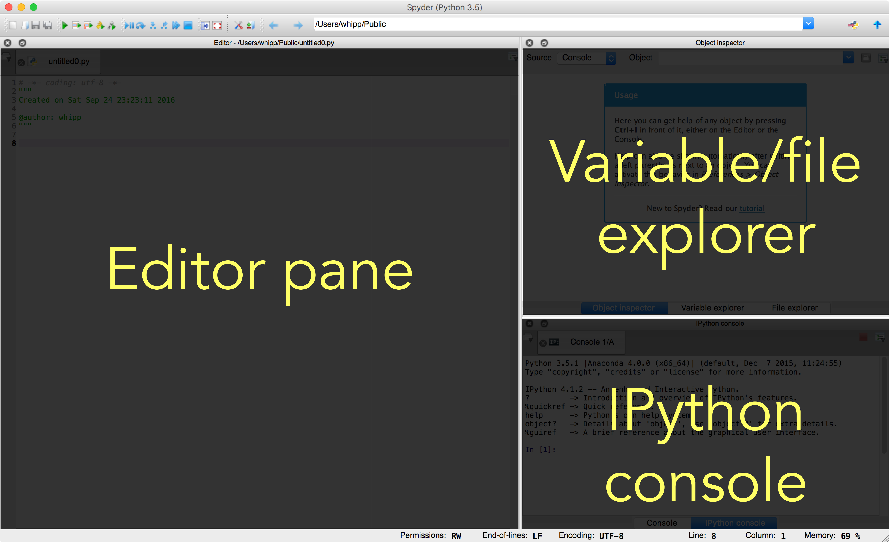

Using the Spyder Integrated Development Environment (IDE)¶
Sections¶
Before we start¶
If you haven’t done so already, open Spyder by double clicking on
the Spyder icon on the desktop of your computer instance or typing
spyder in a terminal window and pressing Enter. Also, for this
demonstration we will be using the Python script file
``Spyder-demo-script.py` <../src/Spyder-demo-script.py>`__ that is
included in the git repository for this week’s lesson.
What is an integrated development environment?¶
An integrated development environment or IDE is a software program or package that provides a set of tools for writing, testing, and debugging software in a convenient, practical interface (often a single window). Often, the components in the IDE include a text editor with options to help debug source code, a built-in terminal or console window, and a pane for viewing variable values, documentation or browsing files on the computer. For us, the main reason for introducing an IDE is that it makes it easier and faster to write and test Python scripts, and common mistakes that can be made when writing code can be indicated in the IDE text editor to help you fix thinks more easily. We will be using the **Spyder** IDE that is included with Anaconda, but it is just one of many Python IDEs.
An overview of the Spyder IDE¶
 The Spyder IDE window
The Spyder IDE window
For the rest of the lessons and exercises in this course we will be using the Spyder IDE. As mentioned above, this will allow us to more easily create and edit Python scripts, as well as provide some helpful tools for continuing to learn programming in Python and resolve common code bugs. As you can see above, the Spyder IDE window is broken into several different panes, labeled in the figure below. We will briefly look at each in the following sections.
 Panes in the Spyder IDE window
The editor pane¶
The main pane on the left is the editor pane, used for writing Python
scripts. If you have already loaded the
`Spyder-demo-script.py <../src/Spyder-demo-script.py>`__ file, you
will see it is basically a normal text editor window with colors used to
highlight the text in the script. In addition, you can see line numbers
on the left side, which can be helpful when debugging.
There are several features that make the Spyder editor pane more useful than a standard text editor:
- A popup window will appear when you type in functions, providing a
bit of documentation about using them. For example, when you type in
the print statement, a window will pop up after you have typed
print(, showing you how to use the function. - If you have a syntax error on a line of your program, a small yellow triangle or red octagon will be displayed to the left of that line. Hovering over the triangle (or octagon) with your mouse will provide some additional information about the possible cause of the error.
- Within Spyder you can easily run your Python scripts by either clicking on the green play icon in the set of icons at the top of the window, or by going to Run -> Run in the menu bar.
The explorer pane¶
The explorer pane in Spyder serves three purposes
- Providing documentation on demand for objects used in your Python
scripts or in the IPython console. The Object inspector tab can
be used to load documentation of various functions or other objects
used either in a script in the editor pane or the IPython console at
the bottom right. Use is simple, just click on the name of a function
in either location and press Ctrl-i to load the documentation. If
you have it loaded you can try this with the
bin()function on line 30 of the`Spyder-demo-script.py<../src/Spyder-demo-script.py>`__ file, for example. - Listing information about variables in memory. If you have defined
any variables in the IPython console or have run a script in the
editor pane, you can find information about defined variables in
memory listed in the Variable explorer tab. If you run the
`Spyder-demo-script.py<../src/Spyder-demo-script.py>`__ script, for example, you will see that the initial value of variableBigNumberis modified within the script, but kept in the definition of the listOddList. - Allowing you to browse the filesystem within **Spyder**. Lastly, you can browse files on your computer using the File explorer tab. In future lessons and exercises you may find this helpful for locating data files, for example.
The console pane¶
The console pane is mainly useful because it provides an IPython console for your use. It is a normal IPython console, but note that similar to the editor pane, popup windows will appear when typing in functions to display brief documentation snippets.
The other item that can be displayed in the console pane is your history of commands entered in the IPython console. This is obviously quite helpful if you’re testing things in the IPython console before copying them to a script in the editor pane. You can view the history pane by going to View -> Panes -> History log in the menu bar.
Some Spyder tips and tricks¶
We have kept this section empty for now, but will add tips and tricks as the course progresses.
Next: Basic concepts of functions Home: Lesson 4 main page